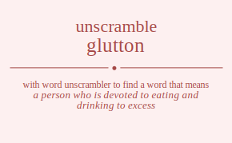

The word found after unscrambling glutton means that a person who is devoted to eating and drinking to excess, musteline mammal of northern Eurasia, .

The word found after unscrambling glutton means that a person who is devoted to eating and drinking to excess, musteline mammal of northern Eurasia, .
You can also find solutions for different combinations of letters in glutton like glutton gluttno glutotn glutont glutnto glutnot glutton gluttno glutotn glutont glutnto glutnot gluottn gluotnt gluottn gluotnt gluontt gluontt gluntto gluntot gluntto gluntot glunott glunott gltuton gltutno gltuotn gltuont gltunto gltunot glttuon glttuno glttoun glttonu glttnuo glttnou gltoutn gltount gltotun gltotnu gltonut gltontu gltnuto gltnuot gltntuo gltntou gltnout gltnotu gltuton gltutno gltuotn gltuont gltunto gltunot glttuon glttuno glttoun glttonu glttnuo glttnou gltoutn gltount gltotun gltotnu gltonut gltontu gltnuto gltnuot gltntuo gltntou gltnout gltnotu glouttn gloutnt glouttn gloutnt glountt glountt glotutn glotunt glottun glottnu glotnut glotntu glotutn glotunt glottun glottnu glotnut glotntu glonutt glonutt glontut glonttu glontut glonttu glnutto glnutot glnutto glnutot glnuott glnuott glntuto glntuot glnttuo glnttou glntout glntotu glntuto glntuot glnttuo glnttou glntout glntotu glnoutt glnoutt glnotut glnottu glnotut glnottu gultton gulttno gultotn gultont gultnto gultnot gultton gulttno gultotn gultont gultnto gultnot gulottn gulotnt gulottn gulotnt gulontt gulontt gulntto gulntot gulntto gulntot gulnott gulnott gutlton gutltno gutlotn gutlont gutlnto gutlnot guttlon guttlno guttoln guttonl guttnlo guttnol gutoltn gutolnt gutotln gutotnl gutonlt gutontl gutnlto gutnlot gutntlo gutntol gutnolt gutnotl gutlton gutltno gutlotn gutlont gutlnto gutlnot guttlon guttlno guttoln guttonl guttnlo guttnol gutoltn gutolnt gutotln gutotnl gutonlt gutontl gutnlto gutnlot gutntlo gutntol gutnolt gutnotl guolttn guoltnt guolttn guoltnt guolntt guolntt guotltn guotlnt guottln guottnl guotnlt guotntl guotltn guotlnt guottln guottnl guotnlt guotntl guonltt guonltt guontlt guonttl guontlt guonttl gunltto gunltot gunltto gunltot gunlott gunlott guntlto guntlot gunttlo gunttol guntolt guntotl guntlto guntlot gunttlo gunttol guntolt guntotl gunoltt gunoltt gunotlt gunottl gunotlt gunottl gtluton gtlutno gtluotn gtluont gtlunto gtlunot gtltuon gtltuno gtltoun gtltonu gtltnuo gtltnou gtloutn gtlount gtlotun gtlotnu gtlonut gtlontu gtlnuto gtlnuot gtlntuo gtlntou gtlnout gtlnotu gtulton gtultno gtulotn gtulont gtulnto gtulnot gtutlon gtutlno gtutoln gtutonl gtutnlo gtutnol gtuoltn gtuolnt gtuotln gtuotnl gtuonlt gtuontl gtunlto gtunlot gtuntlo gtuntol gtunolt gtunotl gttluon gttluno gttloun gttlonu gttlnuo gttlnou gttulon gttulno gttuoln gttuonl gttunlo gttunol gttolun gttolnu gttouln gttounl gttonlu gttonul gttnluo gttnlou gttnulo gttnuol gttnolu gttnoul gtolutn gtolunt gtoltun gtoltnu gtolnut gtolntu gtoultn gtoulnt gtoutln gtoutnl gtounlt gtountl gtotlun gtotlnu gtotuln gtotunl gtotnlu gtotnul gtonlut gtonltu gtonult gtonutl gtontlu gtontul gtnluto gtnluot gtnltuo gtnltou gtnlout gtnlotu gtnulto gtnulot gtnutlo gtnutol gtnuolt gtnuotl gtntluo gtntlou gtntulo gtntuol gtntolu gtntoul gtnolut gtnoltu gtnoult gtnoutl gtnotlu gtnotul gtluton gtlutno gtluotn gtluont gtlunto gtlunot gtltuon gtltuno gtltoun gtltonu gtltnuo gtltnou gtloutn gtlount gtlotun gtlotnu gtlonut gtlontu gtlnuto gtlnuot gtlntuo gtlntou gtlnout gtlnotu gtulton gtultno gtulotn gtulont gtulnto gtulnot gtutlon gtutlno gtutoln gtutonl gtutnlo gtutnol gtuoltn gtuolnt gtuotln gtuotnl gtuonlt gtuontl gtunlto gtunlot gtuntlo gtuntol gtunolt gtunotl gttluon gttluno gttloun gttlonu gttlnuo gttlnou gttulon gttulno gttuoln gttuonl gttunlo gttunol gttolun gttolnu gttouln gttounl gttonlu gttonul gttnluo gttnlou gttnulo gttnuol gttnolu gttnoul gtolutn gtolunt gtoltun gtoltnu gtolnut gtolntu gtoultn gtoulnt gtoutln gtoutnl gtounlt gtountl gtotlun gtotlnu gtotuln gtotunl gtotnlu gtotnul gtonlut gtonltu gtonult gtonutl gtontlu gtontul gtnluto gtnluot gtnltuo gtnltou gtnlout gtnlotu gtnulto gtnulot gtnutlo gtnutol gtnuolt gtnuotl gtntluo gtntlou gtntulo gtntuol gtntolu gtntoul gtnolut gtnoltu gtnoult gtnoutl gtnotlu gtnotul goluttn golutnt goluttn golutnt goluntt goluntt goltutn goltunt golttun golttnu goltnut goltntu goltutn goltunt golttun golttnu goltnut goltntu golnutt golnutt golntut golnttu golntut golnttu goulttn goultnt goulttn goultnt goulntt goulntt goutltn goutlnt gouttln gouttnl goutnlt goutntl goutltn goutlnt gouttln gouttnl goutnlt goutntl gounltt gounltt gountlt gounttl gountlt gounttl gotlutn gotlunt gotltun gotltnu gotlnut gotlntu gotultn gotulnt gotutln gotutnl gotunlt gotuntl gottlun gottlnu gottuln gottunl gottnlu gottnul gotnlut gotnltu gotnult gotnutl gotntlu gotntul gotlutn gotlunt gotltun gotltnu gotlnut gotlntu gotultn gotulnt gotutln gotutnl gotunlt gotuntl gottlun gottlnu gottuln gottunl gottnlu gottnul gotnlut gotnltu gotnult gotnutl gotntlu gotntul gonlutt gonlutt gonltut gonlttu gonltut gonlttu gonultt gonultt gonutlt gonuttl gonutlt gonuttl gontlut gontltu gontult gontutl gonttlu gonttul gontlut gontltu gontult gontutl gonttlu gonttul gnlutto gnlutot gnlutto gnlutot gnluott gnluott gnltuto gnltuot gnlttuo gnlttou gnltout gnltotu gnltuto gnltuot gnlttuo gnlttou gnltout gnltotu gnloutt gnloutt gnlotut gnlottu gnlotut gnlottu gnultto gnultot gnultto gnultot gnulott gnulott gnutlto gnutlot gnuttlo gnuttol gnutolt gnutotl gnutlto gnutlot gnuttlo gnuttol gnutolt gnutotl gnuoltt gnuoltt gnuotlt gnuottl gnuotlt gnuottl gntluto gntluot gntltuo gntltou gntlout gntlotu gntulto gntulot gntutlo gntutol gntuolt gntuotl gnttluo gnttlou gnttulo gnttuol gnttolu gnttoul gntolut gntoltu gntoult gntoutl gntotlu gntotul gntluto gntluot gntltuo gntltou gntlout gntlotu gntulto gntulot gntutlo gntutol gntuolt gntuotl gnttluo gnttlou gnttulo gnttuol gnttolu gnttoul gntolut gntoltu gntoult gntoutl gntotlu gntotul gnolutt gnolutt gnoltut gnolttu gnoltut gnolttu gnoultt gnoultt gnoutlt gnouttl gnoutlt gnouttl gnotlut gnotltu gnotult gnotutl gnottlu gnottul gnotlut gnotltu gnotult gnotutl gnottlu gnottul lgutton lguttno lgutotn lgutont lgutnto lgutnot lgutton lguttno lgutotn lgutont lgutnto lgutnot lguottn lguotnt lguottn lguotnt lguontt lguontt lguntto lguntot lguntto lguntot lgunott lgunott lgtuton lgtutno lgtuotn lgtuont lgtunto lgtunot lgttuon lgttuno lgttoun lgttonu lgttnuo lgttnou lgtoutn lgtount lgtotun lgtotnu lgtonut lgtontu lgtnuto lgtnuot lgtntuo lgtntou lgtnout lgtnotu lgtuton lgtutno lgtuotn lgtuont lgtunto lgtunot lgttuon lgttuno lgttoun lgttonu lgttnuo lgttnou lgtoutn lgtount lgtotun lgtotnu lgtonut lgtontu lgtnuto lgtnuot lgtntuo lgtntou lgtnout lgtnotu lgouttn lgoutnt lgouttn lgoutnt lgountt lgountt lgotutn lgotunt lgottun lgottnu lgotnut lgotntu lgotutn lgotunt lgottun lgottnu lgotnut lgotntu lgonutt lgonutt lgontut lgonttu lgontut lgonttu lgnutto lgnutot lgnutto lgnutot lgnuott lgnuott lgntuto lgntuot lgnttuo lgnttou lgntout lgntotu lgntuto lgntuot lgnttuo lgnttou lgntout lgntotu lgnoutt lgnoutt lgnotut lgnottu lgnotut lgnottu lugtton lugttno lugtotn lugtont lugtnto lugtnot lugtton lugttno lugtotn lugtont lugtnto lugtnot lugottn lugotnt lugottn lugotnt lugontt lugontt lugntto lugntot lugntto lugntot lugnott lugnott lutgton lutgtno lutgotn lutgont lutgnto lutgnot luttgon luttgno luttogn luttong luttngo luttnog lutogtn lutognt lutotgn lutotng lutongt lutontg lutngto lutngot lutntgo lutntog lutnogt lutnotg lutgton lutgtno lutgotn lutgont lutgnto lutgnot luttgon luttgno luttogn luttong luttngo luttnog lutogtn lutognt lutotgn lutotng lutongt lutontg lutngto lutngot lutntgo lutntog lutnogt lutnotg luogttn luogtnt luogttn luogtnt luogntt luogntt luotgtn luotgnt luottgn luottng luotngt luotntg luotgtn luotgnt luottgn luottng luotngt luotntg luongtt luongtt luontgt luonttg luontgt luonttg lungtto lungtot lungtto lungtot lungott lungott luntgto luntgot lunttgo lunttog luntogt luntotg luntgto luntgot lunttgo lunttog luntogt luntotg lunogtt lunogtt lunotgt lunottg lunotgt lunottg ltguton ltgutno ltguotn ltguont ltgunto ltgunot ltgtuon ltgtuno ltgtoun ltgtonu ltgtnuo ltgtnou ltgoutn ltgount ltgotun ltgotnu ltgonut ltgontu ltgnuto ltgnuot ltgntuo ltgntou ltgnout ltgnotu ltugton ltugtno ltugotn ltugont ltugnto ltugnot ltutgon ltutgno ltutogn ltutong ltutngo ltutnog ltuogtn ltuognt ltuotgn ltuotng ltuongt ltuontg ltungto ltungot ltuntgo ltuntog ltunogt ltunotg lttguon lttguno lttgoun lttgonu lttgnuo lttgnou lttugon lttugno lttuogn lttuong lttungo lttunog lttogun lttognu lttougn lttoung lttongu lttonug lttnguo lttngou lttnugo lttnuog lttnogu lttnoug ltogutn ltogunt ltogtun ltogtnu ltognut ltogntu ltougtn ltougnt ltoutgn ltoutng ltoungt ltountg ltotgun ltotgnu ltotugn ltotung ltotngu ltotnug ltongut ltongtu ltonugt ltonutg ltontgu ltontug ltnguto ltnguot ltngtuo ltngtou ltngout ltngotu ltnugto ltnugot ltnutgo ltnutog ltnuogt ltnuotg ltntguo ltntgou ltntugo ltntuog ltntogu ltntoug ltnogut ltnogtu ltnougt ltnoutg ltnotgu ltnotug ltguton ltgutno ltguotn ltguont ltgunto ltgunot ltgtuon ltgtuno ltgtoun ltgtonu ltgtnuo ltgtnou ltgoutn ltgount ltgotun ltgotnu ltgonut ltgontu ltgnuto ltgnuot ltgntuo ltgntou ltgnout ltgnotu ltugton ltugtno ltugotn ltugont ltugnto ltugnot ltutgon ltutgno ltutogn ltutong ltutngo ltutnog ltuogtn ltuognt ltuotgn ltuotng ltuongt ltuontg ltungto ltungot ltuntgo ltuntog ltunogt ltunotg lttguon lttguno lttgoun lttgonu lttgnuo lttgnou lttugon lttugno lttuogn lttuong lttungo lttunog lttogun lttognu lttougn lttoung lttongu lttonug lttnguo lttngou lttnugo lttnuog lttnogu lttnoug ltogutn ltogunt ltogtun ltogtnu ltognut ltogntu ltougtn ltougnt ltoutgn ltoutng ltoungt ltountg ltotgun ltotgnu ltotugn ltotung ltotngu ltotnug ltongut ltongtu ltonugt ltonutg ltontgu ltontug ltnguto ltnguot ltngtuo ltngtou ltngout ltngotu ltnugto ltnugot ltnutgo ltnutog ltnuogt ltnuotg ltntguo ltntgou ltntugo ltntuog ltntogu ltntoug ltnogut ltnogtu ltnougt ltnoutg ltnotgu ltnotug loguttn logutnt loguttn logutnt loguntt loguntt logtutn logtunt logttun logttnu logtnut logtntu logtutn logtunt logttun logttnu logtnut logtntu lognutt lognutt logntut lognttu logntut lognttu lougttn lougtnt lougttn lougtnt lougntt lougntt loutgtn loutgnt louttgn louttng loutngt loutntg loutgtn loutgnt louttgn louttng loutngt loutntg loungtt loungtt lountgt lounttg lountgt lounttg lotgutn lotgunt lotgtun lotgtnu lotgnut lotgntu lotugtn lotugnt lotutgn lotutng lotungt lotuntg lottgun lottgnu lottugn lottung lottngu lottnug lotngut lotngtu lotnugt lotnutg lotntgu lotntug lotgutn lotgunt lotgtun lotgtnu lotgnut lotgntu lotugtn lotugnt lotutgn lotutng lotungt lotuntg lottgun lottgnu lottugn lottung lottngu lottnug lotngut lotngtu lotnugt lotnutg lotntgu lotntug longutt longutt longtut longttu longtut longttu lonugtt lonugtt lonutgt lonuttg lonutgt lonuttg lontgut lontgtu lontugt lontutg lonttgu lonttug lontgut lontgtu lontugt lontutg lonttgu lonttug lngutto lngutot lngutto lngutot lnguott lnguott lngtuto lngtuot lngttuo lngttou lngtout lngtotu lngtuto lngtuot lngttuo lngttou lngtout lngtotu lngoutt lngoutt lngotut lngottu lngotut lngottu lnugtto lnugtot lnugtto lnugtot lnugott lnugott lnutgto lnutgot lnuttgo lnuttog lnutogt lnutotg lnutgto lnutgot lnuttgo lnuttog lnutogt lnutotg lnuogtt lnuogtt lnuotgt lnuottg lnuotgt lnuottg lntguto lntguot lntgtuo lntgtou lntgout lntgotu lntugto lntugot lntutgo lntutog lntuogt lntuotg lnttguo lnttgou lnttugo lnttuog lnttogu lnttoug lntogut lntogtu lntougt lntoutg lntotgu lntotug lntguto lntguot lntgtuo lntgtou lntgout lntgotu lntugto lntugot lntutgo lntutog lntuogt lntuotg lnttguo lnttgou lnttugo lnttuog lnttogu lnttoug lntogut lntogtu lntougt lntoutg lntotgu lntotug lnogutt lnogutt lnogtut lnogttu lnogtut lnogttu lnougtt lnougtt lnoutgt lnouttg lnoutgt lnouttg lnotgut lnotgtu lnotugt lnotutg lnottgu lnottug lnotgut lnotgtu lnotugt lnotutg lnottgu lnottug ugltton uglttno ugltotn ugltont ugltnto ugltnot ugltton uglttno ugltotn ugltont ugltnto ugltnot uglottn uglotnt uglottn uglotnt uglontt uglontt uglntto uglntot uglntto uglntot uglnott uglnott ugtlton ugtltno ugtlotn ugtlont ugtlnto ugtlnot ugttlon ugttlno ugttoln ugttonl ugttnlo ugttnol ugtoltn ugtolnt ugtotln ugtotnl ugtonlt ugtontl ugtnlto ugtnlot ugtntlo ugtntol ugtnolt ugtnotl ugtlton ugtltno ugtlotn ugtlont ugtlnto ugtlnot ugttlon ugttlno ugttoln ugttonl ugttnlo ugttnol ugtoltn ugtolnt ugtotln ugtotnl ugtonlt ugtontl ugtnlto ugtnlot ugtntlo ugtntol ugtnolt ugtnotl ugolttn ugoltnt ugolttn ugoltnt ugolntt ugolntt ugotltn ugotlnt ugottln ugottnl ugotnlt ugotntl ugotltn ugotlnt ugottln ugottnl ugotnlt ugotntl ugonltt ugonltt ugontlt ugonttl ugontlt ugonttl ugnltto ugnltot ugnltto ugnltot ugnlott ugnlott ugntlto ugntlot ugnttlo ugnttol ugntolt ugntotl ugntlto ugntlot ugnttlo ugnttol ugntolt ugntotl ugnoltt ugnoltt ugnotlt ugnottl ugnotlt ugnottl ulgtton ulgttno ulgtotn ulgtont ulgtnto ulgtnot ulgtton ulgttno ulgtotn ulgtont ulgtnto ulgtnot ulgottn ulgotnt ulgottn ulgotnt ulgontt ulgontt ulgntto ulgntot ulgntto ulgntot ulgnott ulgnott ultgton ultgtno ultgotn ultgont ultgnto ultgnot ulttgon ulttgno ulttogn ulttong ulttngo ulttnog ultogtn ultognt ultotgn ultotng ultongt ultontg ultngto ultngot ultntgo ultntog ultnogt ultnotg ultgton ultgtno ultgotn ultgont ultgnto ultgnot ulttgon ulttgno ulttogn ulttong ulttngo ulttnog ultogtn ultognt ultotgn ultotng ultongt ultontg ultngto ultngot ultntgo ultntog ultnogt ultnotg ulogttn ulogtnt ulogttn ulogtnt ulogntt ulogntt ulotgtn ulotgnt ulottgn ulottng ulotngt ulotntg ulotgtn ulotgnt ulottgn ulottng ulotngt ulotntg ulongtt ulongtt ulontgt ulonttg ulontgt ulonttg ulngtto ulngtot ulngtto ulngtot ulngott ulngott ulntgto ulntgot ulnttgo ulnttog ulntogt ulntotg ulntgto ulntgot ulnttgo ulnttog ulntogt ulntotg ulnogtt ulnogtt ulnotgt ulnottg ulnotgt ulnottg utglton utgltno utglotn utglont utglnto utglnot utgtlon utgtlno utgtoln utgtonl utgtnlo utgtnol utgoltn utgolnt utgotln utgotnl utgonlt utgontl utgnlto utgnlot utgntlo utgntol utgnolt utgnotl utlgton utlgtno utlgotn utlgont utlgnto utlgnot utltgon utltgno utltogn utltong utltngo utltnog utlogtn utlognt utlotgn utlotng utlongt utlontg utlngto utlngot utlntgo utlntog utlnogt utlnotg uttglon uttglno uttgoln uttgonl uttgnlo uttgnol uttlgon uttlgno uttlogn uttlong uttlngo uttlnog uttogln uttognl uttolgn uttolng uttongl uttonlg uttnglo uttngol uttnlgo uttnlog uttnogl uttnolg utogltn utoglnt utogtln utogtnl utognlt utogntl utolgtn utolgnt utoltgn utoltng utolngt utolntg utotgln utotgnl utotlgn utotlng utotngl utotnlg utonglt utongtl utonlgt utonltg utontgl utontlg utnglto utnglot utngtlo utngtol utngolt utngotl utnlgto utnlgot utnltgo utnltog utnlogt utnlotg utntglo utntgol utntlgo utntlog utntogl utntolg utnoglt utnogtl utnolgt utnoltg utnotgl utnotlg utglton utgltno utglotn utglont utglnto utglnot utgtlon utgtlno utgtoln utgtonl utgtnlo utgtnol utgoltn utgolnt utgotln utgotnl utgonlt utgontl utgnlto utgnlot utgntlo utgntol utgnolt utgnotl utlgton utlgtno utlgotn utlgont utlgnto utlgnot utltgon utltgno utltogn utltong utltngo utltnog utlogtn utlognt utlotgn utlotng utlongt utlontg utlngto utlngot utlntgo utlntog utlnogt utlnotg uttglon uttglno uttgoln uttgonl uttgnlo uttgnol uttlgon uttlgno uttlogn uttlong uttlngo uttlnog uttogln uttognl uttolgn uttolng uttongl uttonlg uttnglo uttngol uttnlgo uttnlog uttnogl uttnolg utogltn utoglnt utogtln utogtnl utognlt utogntl utolgtn utolgnt utoltgn utoltng utolngt utolntg utotgln utotgnl utotlgn utotlng utotngl utotnlg utonglt utongtl utonlgt utonltg utontgl utontlg utnglto utnglot utngtlo utngtol utngolt utngotl utnlgto utnlgot utnltgo utnltog utnlogt utnlotg utntglo utntgol utntlgo utntlog utntogl utntolg utnoglt utnogtl utnolgt utnoltg utnotgl utnotlg uoglttn uogltnt uoglttn uogltnt uoglntt uoglntt uogtltn uogtlnt uogttln uogttnl uogtnlt uogtntl uogtltn uogtlnt uogttln uogttnl uogtnlt uogtntl uognltt uognltt uogntlt uognttl uogntlt uognttl uolgttn uolgtnt uolgttn uolgtnt uolgntt uolgntt uoltgtn uoltgnt uolttgn uolttng uoltngt uoltntg uoltgtn uoltgnt uolttgn uolttng uoltngt uoltntg uolngtt uolngtt uolntgt uolnttg uolntgt uolnttg uotgltn uotglnt uotgtln uotgtnl uotgnlt uotgntl uotlgtn uotlgnt uotltgn uotltng uotlngt uotlntg uottgln uottgnl uottlgn uottlng uottngl uottnlg uotnglt uotngtl uotnlgt uotnltg uotntgl uotntlg uotgltn uotglnt uotgtln uotgtnl uotgnlt uotgntl uotlgtn uotlgnt uotltgn uotltng uotlngt uotlntg uottgln uottgnl uottlgn uottlng uottngl uottnlg uotnglt uotngtl uotnlgt uotnltg uotntgl uotntlg uongltt uongltt uongtlt uongttl uongtlt uongttl uonlgtt uonlgtt uonltgt uonlttg uonltgt uonlttg uontglt uontgtl uontlgt uontltg uonttgl uonttlg uontglt uontgtl uontlgt uontltg uonttgl uonttlg ungltto ungltot ungltto ungltot unglott unglott ungtlto ungtlot ungttlo ungttol ungtolt ungtotl ungtlto ungtlot ungttlo ungttol ungtolt ungtotl ungoltt ungoltt ungotlt ungottl ungotlt ungottl unlgtto unlgtot unlgtto unlgtot unlgott unlgott unltgto unltgot unlttgo unlttog unltogt unltotg unltgto unltgot unlttgo unlttog unltogt unltotg unlogtt unlogtt unlotgt unlottg unlotgt unlottg untglto untglot untgtlo untgtol untgolt untgotl untlgto untlgot untltgo untltog untlogt untlotg unttglo unttgol unttlgo unttlog unttogl unttolg untoglt untogtl untolgt untoltg untotgl untotlg untglto untglot untgtlo untgtol untgolt untgotl untlgto untlgot untltgo untltog untlogt untlotg unttglo unttgol unttlgo unttlog unttogl unttolg untoglt untogtl untolgt untoltg untotgl untotlg unogltt unogltt unogtlt unogttl unogtlt unogttl unolgtt unolgtt unoltgt unolttg unoltgt unolttg unotglt unotgtl unotlgt unotltg unottgl unottlg unotglt unotgtl unotlgt unotltg unottgl unottlg tgluton tglutno tgluotn tgluont tglunto tglunot tgltuon tgltuno tgltoun tgltonu tgltnuo tgltnou tgloutn tglount tglotun tglotnu tglonut tglontu tglnuto tglnuot tglntuo tglntou tglnout tglnotu tgulton tgultno tgulotn tgulont tgulnto tgulnot tgutlon tgutlno tgutoln tgutonl tgutnlo tgutnol tguoltn tguolnt tguotln tguotnl tguonlt tguontl tgunlto tgunlot tguntlo tguntol tgunolt tgunotl tgtluon tgtluno tgtloun tgtlonu tgtlnuo tgtlnou tgtulon tgtulno tgtuoln tgtuonl tgtunlo tgtunol tgtolun tgtolnu tgtouln tgtounl tgtonlu tgtonul tgtnluo tgtnlou tgtnulo tgtnuol tgtnolu tgtnoul tgolutn tgolunt tgoltun tgoltnu tgolnut tgolntu tgoultn tgoulnt tgoutln tgoutnl tgounlt tgountl tgotlun tgotlnu tgotuln tgotunl tgotnlu tgotnul tgonlut tgonltu tgonult tgonutl tgontlu tgontul tgnluto tgnluot tgnltuo tgnltou tgnlout tgnlotu tgnulto tgnulot tgnutlo tgnutol tgnuolt tgnuotl tgntluo tgntlou tgntulo tgntuol tgntolu tgntoul tgnolut tgnoltu tgnoult tgnoutl tgnotlu tgnotul tlguton tlgutno tlguotn tlguont tlgunto tlgunot tlgtuon tlgtuno tlgtoun tlgtonu tlgtnuo tlgtnou tlgoutn tlgount tlgotun tlgotnu tlgonut tlgontu tlgnuto tlgnuot tlgntuo tlgntou tlgnout tlgnotu tlugton tlugtno tlugotn tlugont tlugnto tlugnot tlutgon tlutgno tlutogn tlutong tlutngo tlutnog tluogtn tluognt tluotgn tluotng tluongt tluontg tlungto tlungot tluntgo tluntog tlunogt tlunotg tltguon tltguno tltgoun tltgonu tltgnuo tltgnou tltugon tltugno tltuogn tltuong tltungo tltunog tltogun tltognu tltougn tltoung tltongu tltonug tltnguo tltngou tltnugo tltnuog tltnogu tltnoug tlogutn tlogunt tlogtun tlogtnu tlognut tlogntu tlougtn tlougnt tloutgn tloutng tloungt tlountg tlotgun tlotgnu tlotugn tlotung tlotngu tlotnug tlongut tlongtu tlonugt tlonutg tlontgu tlontug tlnguto tlnguot tlngtuo tlngtou tlngout tlngotu tlnugto tlnugot tlnutgo tlnutog tlnuogt tlnuotg tlntguo tlntgou tlntugo tlntuog tlntogu tlntoug tlnogut tlnogtu tlnougt tlnoutg tlnotgu tlnotug tuglton tugltno tuglotn tuglont tuglnto tuglnot tugtlon tugtlno tugtoln tugtonl tugtnlo tugtnol tugoltn tugolnt tugotln tugotnl tugonlt tugontl tugnlto tugnlot tugntlo tugntol tugnolt tugnotl tulgton tulgtno tulgotn tulgont tulgnto tulgnot tultgon tultgno tultogn tultong tultngo tultnog tulogtn tulognt tulotgn tulotng tulongt tulontg tulngto tulngot tulntgo tulntog tulnogt tulnotg tutglon tutglno tutgoln tutgonl tutgnlo tutgnol tutlgon tutlgno tutlogn tutlong tutlngo tutlnog tutogln tutognl tutolgn tutolng tutongl tutonlg tutnglo tutngol tutnlgo tutnlog tutnogl tutnolg tuogltn tuoglnt tuogtln tuogtnl tuognlt tuogntl tuolgtn tuolgnt tuoltgn tuoltng tuolngt tuolntg tuotgln tuotgnl tuotlgn tuotlng tuotngl tuotnlg tuonglt tuongtl tuonlgt tuonltg tuontgl tuontlg tunglto tunglot tungtlo tungtol tungolt tungotl tunlgto tunlgot tunltgo tunltog tunlogt tunlotg tuntglo tuntgol tuntlgo tuntlog tuntogl tuntolg tunoglt tunogtl tunolgt tunoltg tunotgl tunotlg ttgluon ttgluno ttgloun ttglonu ttglnuo ttglnou ttgulon ttgulno ttguoln ttguonl ttgunlo ttgunol ttgolun ttgolnu ttgouln ttgounl ttgonlu ttgonul ttgnluo ttgnlou ttgnulo ttgnuol ttgnolu ttgnoul ttlguon ttlguno ttlgoun ttlgonu ttlgnuo ttlgnou ttlugon ttlugno ttluogn ttluong ttlungo ttlunog ttlogun ttlognu ttlougn ttloung ttlongu ttlonug ttlnguo ttlngou ttlnugo ttlnuog ttlnogu ttlnoug ttuglon ttuglno ttugoln ttugonl ttugnlo ttugnol ttulgon ttulgno ttulogn ttulong ttulngo ttulnog ttuogln ttuognl ttuolgn ttuolng ttuongl ttuonlg ttunglo ttungol ttunlgo ttunlog ttunogl ttunolg ttoglun ttoglnu ttoguln ttogunl ttognlu ttognul ttolgun ttolgnu ttolugn ttolung ttolngu ttolnug ttougln ttougnl ttoulgn ttoulng ttoungl ttounlg ttonglu ttongul ttonlgu ttonlug ttonugl ttonulg ttngluo ttnglou ttngulo ttnguol ttngolu ttngoul ttnlguo ttnlgou ttnlugo ttnluog ttnlogu ttnloug ttnuglo ttnugol ttnulgo ttnulog ttnuogl ttnuolg ttnoglu ttnogul ttnolgu ttnolug ttnougl ttnoulg toglutn toglunt togltun togltnu toglnut toglntu togultn togulnt togutln togutnl togunlt toguntl togtlun togtlnu togtuln togtunl togtnlu togtnul tognlut tognltu tognult tognutl togntlu togntul tolgutn tolgunt tolgtun tolgtnu tolgnut tolgntu tolugtn tolugnt tolutgn tolutng tolungt toluntg toltgun toltgnu toltugn toltung toltngu toltnug tolngut tolngtu tolnugt tolnutg tolntgu tolntug tougltn touglnt tougtln tougtnl tougnlt tougntl toulgtn toulgnt toultgn toultng toulngt toulntg toutgln toutgnl toutlgn toutlng toutngl toutnlg tounglt toungtl tounlgt tounltg tountgl tountlg totglun totglnu totguln totgunl totgnlu totgnul totlgun totlgnu totlugn totlung totlngu totlnug totugln totugnl totulgn totulng totungl totunlg totnglu totngul totnlgu totnlug totnugl totnulg tonglut tongltu tongult tongutl tongtlu tongtul tonlgut tonlgtu tonlugt tonlutg tonltgu tonltug tonuglt tonugtl tonulgt tonultg tonutgl tonutlg tontglu tontgul tontlgu tontlug tontugl tontulg tngluto tngluot tngltuo tngltou tnglout tnglotu tngulto tngulot tngutlo tngutol tnguolt tnguotl tngtluo tngtlou tngtulo tngtuol tngtolu tngtoul tngolut tngoltu tngoult tngoutl tngotlu tngotul tnlguto tnlguot tnlgtuo tnlgtou tnlgout tnlgotu tnlugto tnlugot tnlutgo tnlutog tnluogt tnluotg tnltguo tnltgou tnltugo tnltuog tnltogu tnltoug tnlogut tnlogtu tnlougt tnloutg tnlotgu tnlotug tnuglto tnuglot tnugtlo tnugtol tnugolt tnugotl tnulgto tnulgot tnultgo tnultog tnulogt tnulotg tnutglo tnutgol tnutlgo tnutlog tnutogl tnutolg tnuoglt tnuogtl tnuolgt tnuoltg tnuotgl tnuotlg tntgluo tntglou tntgulo tntguol tntgolu tntgoul tntlguo tntlgou tntlugo tntluog tntlogu tntloug tntuglo tntugol tntulgo tntulog tntuogl tntuolg tntoglu tntogul tntolgu tntolug tntougl tntoulg tnoglut tnogltu tnogult tnogutl tnogtlu tnogtul tnolgut tnolgtu tnolugt tnolutg tnoltgu tnoltug tnouglt tnougtl tnoulgt tnoultg tnoutgl tnoutlg tnotglu tnotgul tnotlgu tnotlug tnotugl tnotulg tgluton tglutno tgluotn tgluont tglunto tglunot tgltuon tgltuno tgltoun tgltonu tgltnuo tgltnou tgloutn tglount tglotun tglotnu tglonut tglontu tglnuto tglnuot tglntuo tglntou tglnout tglnotu tgulton tgultno tgulotn tgulont tgulnto tgulnot tgutlon tgutlno tgutoln tgutonl tgutnlo tgutnol tguoltn tguolnt tguotln tguotnl tguonlt tguontl tgunlto tgunlot tguntlo tguntol tgunolt tgunotl tgtluon tgtluno tgtloun tgtlonu tgtlnuo tgtlnou tgtulon tgtulno tgtuoln tgtuonl tgtunlo tgtunol tgtolun tgtolnu tgtouln tgtounl tgtonlu tgtonul tgtnluo tgtnlou tgtnulo tgtnuol tgtnolu tgtnoul tgolutn tgolunt tgoltun tgoltnu tgolnut tgolntu tgoultn tgoulnt tgoutln tgoutnl tgounlt tgountl tgotlun tgotlnu tgotuln tgotunl tgotnlu tgotnul tgonlut tgonltu tgonult tgonutl tgontlu tgontul tgnluto tgnluot tgnltuo tgnltou tgnlout tgnlotu tgnulto tgnulot tgnutlo tgnutol tgnuolt tgnuotl tgntluo tgntlou tgntulo tgntuol tgntolu tgntoul tgnolut tgnoltu tgnoult tgnoutl tgnotlu tgnotul tlguton tlgutno tlguotn tlguont tlgunto tlgunot tlgtuon tlgtuno tlgtoun tlgtonu tlgtnuo tlgtnou tlgoutn tlgount tlgotun tlgotnu tlgonut tlgontu tlgnuto tlgnuot tlgntuo tlgntou tlgnout tlgnotu tlugton tlugtno tlugotn tlugont tlugnto tlugnot tlutgon tlutgno tlutogn tlutong tlutngo tlutnog tluogtn tluognt tluotgn tluotng tluongt tluontg tlungto tlungot tluntgo tluntog tlunogt tlunotg tltguon tltguno tltgoun tltgonu tltgnuo tltgnou tltugon tltugno tltuogn tltuong tltungo tltunog tltogun tltognu tltougn tltoung tltongu tltonug tltnguo tltngou tltnugo tltnuog tltnogu tltnoug tlogutn tlogunt tlogtun tlogtnu tlognut tlogntu tlougtn tlougnt tloutgn tloutng tloungt tlountg tlotgun tlotgnu tlotugn tlotung tlotngu tlotnug tlongut tlongtu tlonugt tlonutg tlontgu tlontug tlnguto tlnguot tlngtuo tlngtou tlngout tlngotu tlnugto tlnugot tlnutgo tlnutog tlnuogt tlnuotg tlntguo tlntgou tlntugo tlntuog tlntogu tlntoug tlnogut tlnogtu tlnougt tlnoutg tlnotgu tlnotug tuglton tugltno tuglotn tuglont tuglnto tuglnot tugtlon tugtlno tugtoln tugtonl tugtnlo tugtnol tugoltn tugolnt tugotln tugotnl tugonlt tugontl tugnlto tugnlot tugntlo tugntol tugnolt tugnotl tulgton tulgtno tulgotn tulgont tulgnto tulgnot tultgon tultgno tultogn tultong tultngo tultnog tulogtn tulognt tulotgn tulotng tulongt tulontg tulngto tulngot tulntgo tulntog tulnogt tulnotg tutglon tutglno tutgoln tutgonl tutgnlo tutgnol tutlgon tutlgno tutlogn tutlong tutlngo tutlnog tutogln tutognl tutolgn tutolng tutongl tutonlg tutnglo tutngol tutnlgo tutnlog tutnogl tutnolg tuogltn tuoglnt tuogtln tuogtnl tuognlt tuogntl tuolgtn tuolgnt tuoltgn tuoltng tuolngt tuolntg tuotgln tuotgnl tuotlgn tuotlng tuotngl tuotnlg tuonglt tuongtl tuonlgt tuonltg tuontgl tuontlg tunglto tunglot tungtlo tungtol tungolt tungotl tunlgto tunlgot tunltgo tunltog tunlogt tunlotg tuntglo tuntgol tuntlgo tuntlog tuntogl tuntolg tunoglt tunogtl tunolgt tunoltg tunotgl tunotlg ttgluon ttgluno ttgloun ttglonu ttglnuo ttglnou ttgulon ttgulno ttguoln ttguonl ttgunlo ttgunol ttgolun ttgolnu ttgouln ttgounl ttgonlu ttgonul ttgnluo ttgnlou ttgnulo ttgnuol ttgnolu ttgnoul ttlguon ttlguno ttlgoun ttlgonu ttlgnuo ttlgnou ttlugon ttlugno ttluogn ttluong ttlungo ttlunog ttlogun ttlognu ttlougn ttloung ttlongu ttlonug ttlnguo ttlngou ttlnugo ttlnuog ttlnogu ttlnoug ttuglon ttuglno ttugoln ttugonl ttugnlo ttugnol ttulgon ttulgno ttulogn ttulong ttulngo ttulnog ttuogln ttuognl ttuolgn ttuolng ttuongl ttuonlg ttunglo ttungol ttunlgo ttunlog ttunogl ttunolg ttoglun ttoglnu ttoguln ttogunl ttognlu ttognul ttolgun ttolgnu ttolugn ttolung ttolngu ttolnug ttougln ttougnl ttoulgn ttoulng ttoungl ttounlg ttonglu ttongul ttonlgu ttonlug ttonugl ttonulg ttngluo ttnglou ttngulo ttnguol ttngolu ttngoul ttnlguo ttnlgou ttnlugo ttnluog ttnlogu ttnloug ttnuglo ttnugol ttnulgo ttnulog ttnuogl ttnuolg ttnoglu ttnogul ttnolgu ttnolug ttnougl ttnoulg toglutn toglunt togltun togltnu toglnut toglntu togultn togulnt togutln togutnl togunlt toguntl togtlun togtlnu togtuln togtunl togtnlu togtnul tognlut tognltu tognult tognutl togntlu togntul tolgutn tolgunt tolgtun tolgtnu tolgnut tolgntu tolugtn tolugnt tolutgn tolutng tolungt toluntg toltgun toltgnu toltugn toltung toltngu toltnug tolngut tolngtu tolnugt tolnutg tolntgu tolntug tougltn touglnt tougtln tougtnl tougnlt tougntl toulgtn toulgnt toultgn toultng toulngt toulntg toutgln toutgnl toutlgn toutlng toutngl toutnlg tounglt toungtl tounlgt tounltg tountgl tountlg totglun totglnu totguln totgunl totgnlu totgnul totlgun totlgnu totlugn totlung totlngu totlnug totugln totugnl totulgn totulng totungl totunlg totnglu totngul totnlgu totnlug totnugl totnulg tonglut tongltu tongult tongutl tongtlu tongtul tonlgut tonlgtu tonlugt tonlutg tonltgu tonltug tonuglt tonugtl tonulgt tonultg tonutgl tonutlg tontglu tontgul tontlgu tontlug tontugl tontulg tngluto tngluot tngltuo tngltou tnglout tnglotu tngulto tngulot tngutlo tngutol tnguolt tnguotl tngtluo tngtlou tngtulo tngtuol tngtolu tngtoul tngolut tngoltu tngoult tngoutl tngotlu tngotul tnlguto tnlguot tnlgtuo tnlgtou tnlgout tnlgotu tnlugto tnlugot tnlutgo tnlutog tnluogt tnluotg tnltguo tnltgou tnltugo tnltuog tnltogu tnltoug tnlogut tnlogtu tnlougt tnloutg tnlotgu tnlotug tnuglto tnuglot tnugtlo tnugtol tnugolt tnugotl tnulgto tnulgot tnultgo tnultog tnulogt tnulotg tnutglo tnutgol tnutlgo tnutlog tnutogl tnutolg tnuoglt tnuogtl tnuolgt tnuoltg tnuotgl tnuotlg tntgluo tntglou tntgulo tntguol tntgolu tntgoul tntlguo tntlgou tntlugo tntluog tntlogu tntloug tntuglo tntugol tntulgo tntulog tntuogl tntuolg tntoglu tntogul tntolgu tntolug tntougl tntoulg tnoglut tnogltu tnogult tnogutl tnogtlu tnogtul tnolgut tnolgtu tnolugt tnolutg tnoltgu tnoltug tnouglt tnougtl tnoulgt tnoultg tnoutgl tnoutlg tnotglu tnotgul tnotlgu tnotlug tnotugl tnotulg ogluttn oglutnt ogluttn oglutnt ogluntt ogluntt ogltutn ogltunt oglttun oglttnu ogltnut ogltntu ogltutn ogltunt oglttun oglttnu ogltnut ogltntu oglnutt oglnutt oglntut oglnttu oglntut oglnttu ogulttn ogultnt ogulttn ogultnt ogulntt ogulntt ogutltn ogutlnt oguttln oguttnl ogutnlt ogutntl ogutltn ogutlnt oguttln oguttnl ogutnlt ogutntl ogunltt ogunltt oguntlt ogunttl oguntlt ogunttl ogtlutn ogtlunt ogtltun ogtltnu ogtlnut ogtlntu ogtultn ogtulnt ogtutln ogtutnl ogtunlt ogtuntl ogttlun ogttlnu ogttuln ogttunl ogttnlu ogttnul ogtnlut ogtnltu ogtnult ogtnutl ogtntlu ogtntul ogtlutn ogtlunt ogtltun ogtltnu ogtlnut ogtlntu ogtultn ogtulnt ogtutln ogtutnl ogtunlt ogtuntl ogttlun ogttlnu ogttuln ogttunl ogttnlu ogttnul ogtnlut ogtnltu ogtnult ogtnutl ogtntlu ogtntul ognlutt ognlutt ognltut ognlttu ognltut ognlttu ognultt ognultt ognutlt ognuttl ognutlt ognuttl ogntlut ogntltu ogntult ogntutl ognttlu ognttul ogntlut ogntltu ogntult ogntutl ognttlu ognttul olguttn olgutnt olguttn olgutnt olguntt olguntt olgtutn olgtunt olgttun olgttnu olgtnut olgtntu olgtutn olgtunt olgttun olgttnu olgtnut olgtntu olgnutt olgnutt olgntut olgnttu olgntut olgnttu olugttn olugtnt olugttn olugtnt olugntt olugntt olutgtn olutgnt oluttgn oluttng olutngt olutntg olutgtn olutgnt oluttgn oluttng olutngt olutntg olungtt olungtt oluntgt olunttg oluntgt olunttg oltgutn oltgunt oltgtun oltgtnu oltgnut oltgntu oltugtn oltugnt oltutgn oltutng oltungt oltuntg olttgun olttgnu olttugn olttung olttngu olttnug oltngut oltngtu oltnugt oltnutg oltntgu oltntug oltgutn oltgunt oltgtun oltgtnu oltgnut oltgntu oltugtn oltugnt oltutgn oltutng oltungt oltuntg olttgun olttgnu olttugn olttung olttngu olttnug oltngut oltngtu oltnugt oltnutg oltntgu oltntug olngutt olngutt olngtut olngttu olngtut olngttu olnugtt olnugtt olnutgt olnuttg olnutgt olnuttg olntgut olntgtu olntugt olntutg olnttgu olnttug olntgut olntgtu olntugt olntutg olnttgu olnttug ouglttn ougltnt ouglttn ougltnt ouglntt ouglntt ougtltn ougtlnt ougttln ougttnl ougtnlt ougtntl ougtltn ougtlnt ougttln ougttnl ougtnlt ougtntl ougnltt ougnltt ougntlt ougnttl ougntlt ougnttl oulgttn oulgtnt oulgttn oulgtnt oulgntt oulgntt oultgtn oultgnt oulttgn oulttng oultngt oultntg oultgtn oultgnt oulttgn oulttng oultngt oultntg oulngtt oulngtt oulntgt oulnttg oulntgt oulnttg outgltn outglnt outgtln outgtnl outgnlt outgntl outlgtn outlgnt outltgn outltng outlngt outlntg outtgln outtgnl outtlgn outtlng outtngl outtnlg outnglt outngtl outnlgt outnltg outntgl outntlg outgltn outglnt outgtln outgtnl outgnlt outgntl outlgtn outlgnt outltgn outltng outlngt outlntg outtgln outtgnl outtlgn outtlng outtngl outtnlg outnglt outngtl outnlgt outnltg outntgl outntlg oungltt oungltt oungtlt oungttl oungtlt oungttl ounlgtt ounlgtt ounltgt ounlttg ounltgt ounlttg ountglt ountgtl ountlgt ountltg ounttgl ounttlg ountglt ountgtl ountlgt ountltg ounttgl ounttlg otglutn otglunt otgltun otgltnu otglnut otglntu otgultn otgulnt otgutln otgutnl otgunlt otguntl otgtlun otgtlnu otgtuln otgtunl otgtnlu otgtnul otgnlut otgnltu otgnult otgnutl otgntlu otgntul otlgutn otlgunt otlgtun otlgtnu otlgnut otlgntu otlugtn otlugnt otlutgn otlutng otlungt otluntg otltgun otltgnu otltugn otltung otltngu otltnug otlngut otlngtu otlnugt otlnutg otlntgu otlntug otugltn otuglnt otugtln otugtnl otugnlt otugntl otulgtn otulgnt otultgn otultng otulngt otulntg otutgln otutgnl otutlgn otutlng otutngl otutnlg otunglt otungtl otunlgt otunltg otuntgl otuntlg ottglun ottglnu ottguln ottgunl ottgnlu ottgnul ottlgun ottlgnu ottlugn ottlung ottlngu ottlnug ottugln ottugnl ottulgn ottulng ottungl ottunlg ottnglu ottngul ottnlgu ottnlug ottnugl ottnulg otnglut otngltu otngult otngutl otngtlu otngtul otnlgut otnlgtu otnlugt otnlutg otnltgu otnltug otnuglt otnugtl otnulgt otnultg otnutgl otnutlg otntglu otntgul otntlgu otntlug otntugl otntulg otglutn otglunt otgltun otgltnu otglnut otglntu otgultn otgulnt otgutln otgutnl otgunlt otguntl otgtlun otgtlnu otgtuln otgtunl otgtnlu otgtnul otgnlut otgnltu otgnult otgnutl otgntlu otgntul otlgutn otlgunt otlgtun otlgtnu otlgnut otlgntu otlugtn otlugnt otlutgn otlutng otlungt otluntg otltgun otltgnu otltugn otltung otltngu otltnug otlngut otlngtu otlnugt otlnutg otlntgu otlntug otugltn otuglnt otugtln otugtnl otugnlt otugntl otulgtn otulgnt otultgn otultng otulngt otulntg otutgln otutgnl otutlgn otutlng otutngl otutnlg otunglt otungtl otunlgt otunltg otuntgl otuntlg ottglun ottglnu ottguln ottgunl ottgnlu ottgnul ottlgun ottlgnu ottlugn ottlung ottlngu ottlnug ottugln ottugnl ottulgn ottulng ottungl ottunlg ottnglu ottngul ottnlgu ottnlug ottnugl ottnulg otnglut otngltu otngult otngutl otngtlu otngtul otnlgut otnlgtu otnlugt otnlutg otnltgu otnltug otnuglt otnugtl otnulgt otnultg otnutgl otnutlg otntglu otntgul otntlgu otntlug otntugl otntulg onglutt onglutt ongltut onglttu ongltut onglttu ongultt ongultt ongutlt onguttl ongutlt onguttl ongtlut ongtltu ongtult ongtutl ongttlu ongttul ongtlut ongtltu ongtult ongtutl ongttlu ongttul onlgutt onlgutt onlgtut onlgttu onlgtut onlgttu onlugtt onlugtt onlutgt onluttg onlutgt onluttg onltgut onltgtu onltugt onltutg onlttgu onlttug onltgut onltgtu onltugt onltutg onlttgu onlttug onugltt onugltt onugtlt onugttl onugtlt onugttl onulgtt onulgtt onultgt onulttg onultgt onulttg onutglt onutgtl onutlgt onutltg onuttgl onuttlg onutglt onutgtl onutlgt onutltg onuttgl onuttlg ontglut ontgltu ontgult ontgutl ontgtlu ontgtul ontlgut ontlgtu ontlugt ontlutg ontltgu ontltug ontuglt ontugtl ontulgt ontultg ontutgl ontutlg onttglu onttgul onttlgu onttlug onttugl onttulg ontglut ontgltu ontgult ontgutl ontgtlu ontgtul ontlgut ontlgtu ontlugt ontlutg ontltgu ontltug ontuglt ontugtl ontulgt ontultg ontutgl ontutlg onttglu onttgul onttlgu onttlug onttugl onttulg nglutto nglutot nglutto nglutot ngluott ngluott ngltuto ngltuot nglttuo nglttou ngltout ngltotu ngltuto ngltuot nglttuo nglttou ngltout ngltotu ngloutt ngloutt nglotut nglottu nglotut nglottu ngultto ngultot ngultto ngultot ngulott ngulott ngutlto ngutlot nguttlo nguttol ngutolt ngutotl ngutlto ngutlot nguttlo nguttol ngutolt ngutotl nguoltt nguoltt nguotlt nguottl nguotlt nguottl ngtluto ngtluot ngtltuo ngtltou ngtlout ngtlotu ngtulto ngtulot ngtutlo ngtutol ngtuolt ngtuotl ngttluo ngttlou ngttulo ngttuol ngttolu ngttoul ngtolut ngtoltu ngtoult ngtoutl ngtotlu ngtotul ngtluto ngtluot ngtltuo ngtltou ngtlout ngtlotu ngtulto ngtulot ngtutlo ngtutol ngtuolt ngtuotl ngttluo ngttlou ngttulo ngttuol ngttolu ngttoul ngtolut ngtoltu ngtoult ngtoutl ngtotlu ngtotul ngolutt ngolutt ngoltut ngolttu ngoltut ngolttu ngoultt ngoultt ngoutlt ngouttl ngoutlt ngouttl ngotlut ngotltu ngotult ngotutl ngottlu ngottul ngotlut ngotltu ngotult ngotutl ngottlu ngottul nlgutto nlgutot nlgutto nlgutot nlguott nlguott nlgtuto nlgtuot nlgttuo nlgttou nlgtout nlgtotu nlgtuto nlgtuot nlgttuo nlgttou nlgtout nlgtotu nlgoutt nlgoutt nlgotut nlgottu nlgotut nlgottu nlugtto nlugtot nlugtto nlugtot nlugott nlugott nlutgto nlutgot nluttgo nluttog nlutogt nlutotg nlutgto nlutgot nluttgo nluttog nlutogt nlutotg nluogtt nluogtt nluotgt nluottg nluotgt nluottg nltguto nltguot nltgtuo nltgtou nltgout nltgotu nltugto nltugot nltutgo nltutog nltuogt nltuotg nlttguo nlttgou nlttugo nlttuog nlttogu nlttoug nltogut nltogtu nltougt nltoutg nltotgu nltotug nltguto nltguot nltgtuo nltgtou nltgout nltgotu nltugto nltugot nltutgo nltutog nltuogt nltuotg nlttguo nlttgou nlttugo nlttuog nlttogu nlttoug nltogut nltogtu nltougt nltoutg nltotgu nltotug nlogutt nlogutt nlogtut nlogttu nlogtut nlogttu nlougtt nlougtt nloutgt nlouttg nloutgt nlouttg nlotgut nlotgtu nlotugt nlotutg nlottgu nlottug nlotgut nlotgtu nlotugt nlotutg nlottgu nlottug nugltto nugltot nugltto nugltot nuglott nuglott nugtlto nugtlot nugttlo nugttol nugtolt nugtotl nugtlto nugtlot nugttlo nugttol nugtolt nugtotl nugoltt nugoltt nugotlt nugottl nugotlt nugottl nulgtto nulgtot nulgtto nulgtot nulgott nulgott nultgto nultgot nulttgo nulttog nultogt nultotg nultgto nultgot nulttgo nulttog nultogt nultotg nulogtt nulogtt nulotgt nulottg nulotgt nulottg nutglto nutglot nutgtlo nutgtol nutgolt nutgotl nutlgto nutlgot nutltgo nutltog nutlogt nutlotg nuttglo nuttgol nuttlgo nuttlog nuttogl nuttolg nutoglt nutogtl nutolgt nutoltg nutotgl nutotlg nutglto nutglot nutgtlo nutgtol nutgolt nutgotl nutlgto nutlgot nutltgo nutltog nutlogt nutlotg nuttglo nuttgol nuttlgo nuttlog nuttogl nuttolg nutoglt nutogtl nutolgt nutoltg nutotgl nutotlg nuogltt nuogltt nuogtlt nuogttl nuogtlt nuogttl nuolgtt nuolgtt nuoltgt nuolttg nuoltgt nuolttg nuotglt nuotgtl nuotlgt nuotltg nuottgl nuottlg nuotglt nuotgtl nuotlgt nuotltg nuottgl nuottlg ntgluto ntgluot ntgltuo ntgltou ntglout ntglotu ntgulto ntgulot ntgutlo ntgutol ntguolt ntguotl ntgtluo ntgtlou ntgtulo ntgtuol ntgtolu ntgtoul ntgolut ntgoltu ntgoult ntgoutl ntgotlu ntgotul ntlguto ntlguot ntlgtuo ntlgtou ntlgout ntlgotu ntlugto ntlugot ntlutgo ntlutog ntluogt ntluotg ntltguo ntltgou ntltugo ntltuog ntltogu ntltoug ntlogut ntlogtu ntlougt ntloutg ntlotgu ntlotug ntuglto ntuglot ntugtlo ntugtol ntugolt ntugotl ntulgto ntulgot ntultgo ntultog ntulogt ntulotg ntutglo ntutgol ntutlgo ntutlog ntutogl ntutolg ntuoglt ntuogtl ntuolgt ntuoltg ntuotgl ntuotlg nttgluo nttglou nttgulo nttguol nttgolu nttgoul nttlguo nttlgou nttlugo nttluog nttlogu nttloug nttuglo nttugol nttulgo nttulog nttuogl nttuolg nttoglu nttogul nttolgu nttolug nttougl nttoulg ntoglut ntogltu ntogult ntogutl ntogtlu ntogtul ntolgut ntolgtu ntolugt ntolutg ntoltgu ntoltug ntouglt ntougtl ntoulgt ntoultg ntoutgl ntoutlg ntotglu ntotgul ntotlgu ntotlug ntotugl ntotulg ntgluto ntgluot ntgltuo ntgltou ntglout ntglotu ntgulto ntgulot ntgutlo ntgutol ntguolt ntguotl ntgtluo ntgtlou ntgtulo ntgtuol ntgtolu ntgtoul ntgolut ntgoltu ntgoult ntgoutl ntgotlu ntgotul ntlguto ntlguot ntlgtuo ntlgtou ntlgout ntlgotu ntlugto ntlugot ntlutgo ntlutog ntluogt ntluotg ntltguo ntltgou ntltugo ntltuog ntltogu ntltoug ntlogut ntlogtu ntlougt ntloutg ntlotgu ntlotug ntuglto ntuglot ntugtlo ntugtol ntugolt ntugotl ntulgto ntulgot ntultgo ntultog ntulogt ntulotg ntutglo ntutgol ntutlgo ntutlog ntutogl ntutolg ntuoglt ntuogtl ntuolgt ntuoltg ntuotgl ntuotlg nttgluo nttglou nttgulo nttguol nttgolu nttgoul nttlguo nttlgou nttlugo nttluog nttlogu nttloug nttuglo nttugol nttulgo nttulog nttuogl nttuolg nttoglu nttogul nttolgu nttolug nttougl nttoulg ntoglut ntogltu ntogult ntogutl ntogtlu ntogtul ntolgut ntolgtu ntolugt ntolutg ntoltgu ntoltug ntouglt ntougtl ntoulgt ntoultg ntoutgl ntoutlg ntotglu ntotgul ntotlgu ntotlug ntotugl ntotulg noglutt noglutt nogltut noglttu nogltut noglttu nogultt nogultt nogutlt noguttl nogutlt noguttl nogtlut nogtltu nogtult nogtutl nogttlu nogttul nogtlut nogtltu nogtult nogtutl nogttlu nogttul nolgutt nolgutt nolgtut nolgttu nolgtut nolgttu nolugtt nolugtt nolutgt noluttg nolutgt noluttg noltgut noltgtu noltugt noltutg nolttgu nolttug noltgut noltgtu noltugt noltutg nolttgu nolttug nougltt nougltt nougtlt nougttl nougtlt nougttl noulgtt noulgtt noultgt noulttg noultgt noulttg noutglt noutgtl noutlgt noutltg nouttgl nouttlg noutglt noutgtl noutlgt noutltg nouttgl nouttlg notglut notgltu notgult notgutl notgtlu notgtul notlgut notlgtu notlugt notlutg notltgu notltug notuglt notugtl notulgt notultg notutgl notutlg nottglu nottgul nottlgu nottlug nottugl nottulg notglut notgltu notgult notgutl notgtlu notgtul notlgut notlgtu notlugt notlutg notltgu notltug notuglt notugtl notulgt notultg notutgl notutlg nottglu nottgul nottlgu nottlug nottugl nottulg.
Unscramble Words is registered trademark.